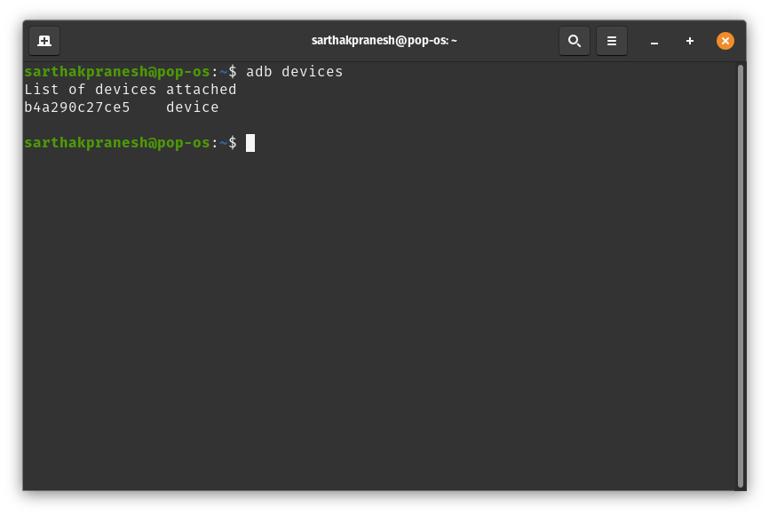

Wireless connection to Android Device for app development
Introduction
Background story: I, being a React-Native developer always had problems with managing wires connecting my mobile devices to the laptop. Almost all of the time when I was deeply engrossed in solving a bug or saving a new feature, I realized that my build command failed because the wire somehow disconnected. Annoying at its best, having those wires around destroying the tidy work environment, and my phone still charging at a 100% üôè.
In this article we’ll be using ADB (Android Debug Bridge) and your Wifi network, to get rid off the hanging wires.
Tip: if you are a React-Native developer like me checkout Expo.
Whats ADB
Android Debug Bridge or for short ADB is a command line tool that lets us, the developers to communicate to our devices efficiently. It facilitates the common needs and requirements of app developers, such as installing and debugging your apps. Apart from this it also provides us with a UNIX like shell that can be used to run various commands on our mobile devices.
For starters, open a terminal and try out the adb command and read through the documentation. We will be using only two commands in adb, namely tcpip and connect.
Let’s get started
What we’ll need is to have our laptop/desktop and the mobile device on the same network. We’ll also require the IP address of our mobile device on the network. This can be retrieved in many ways, some our listed below:
- Open the Wifi settings -> click on the connected network -> IP address and other details will be listed here. Your device might have these details present somewhere else too.
- Use adb to retrieve the IP address of your device. In this case you’ll require a wire. Follow the below steps:
- Connect your mobile to your laptop/desktop using a wire
- Open a terminal and run the following command to make sure your mobile is connected:
adb devices

- If your device was connected, you can now run the following command to retrieve your device’s IP address. Take a note of this IP address as we’ll require it later.
adb shell ifconfig
Here my device’s IP address is 192.168.1.128.
tcpip
We need to restart adb in the TCP mode so that we can connect to our device through our network. For doing so we use the tcpip command available in adb. This command takes in one argument which is the port on which adb should listen on. So we restart our adb in TCP mode listening on port 5555, using the following command (for this step,
make sure your mobile is connected to your laptop/desktop using a wire):
adb tcpip 5555
Now we are ready to connect to our mobile device without wire. If your device is connected to your laptop/desktop, then this is the time to unplug your device and get rid of that wire.
connect
So we have the device’s IP address and our adb is running in TCP mode listening on port 5555. Now all we need is to connect to our mobile device using the connect command available in adb. This command takes one argument which is the IP address for the device to connect too along with the port. We can now establish the connection between our laptop/desktop and our mobile device using the following command:
adb connect 192.168.1.128:5555
Hurray üçª! Your device is now connected to your laptop/desktop through your Wifi network, and those old annoying wires can now take break for good. Though your milage with this may actually vary depending upon your system and router settings, but I have used this setup on numerous Wifi networks without a fail yet (will update here if the same changes).